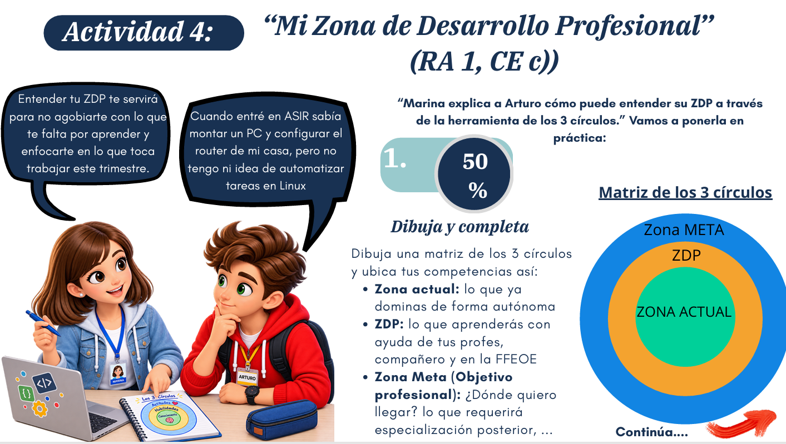
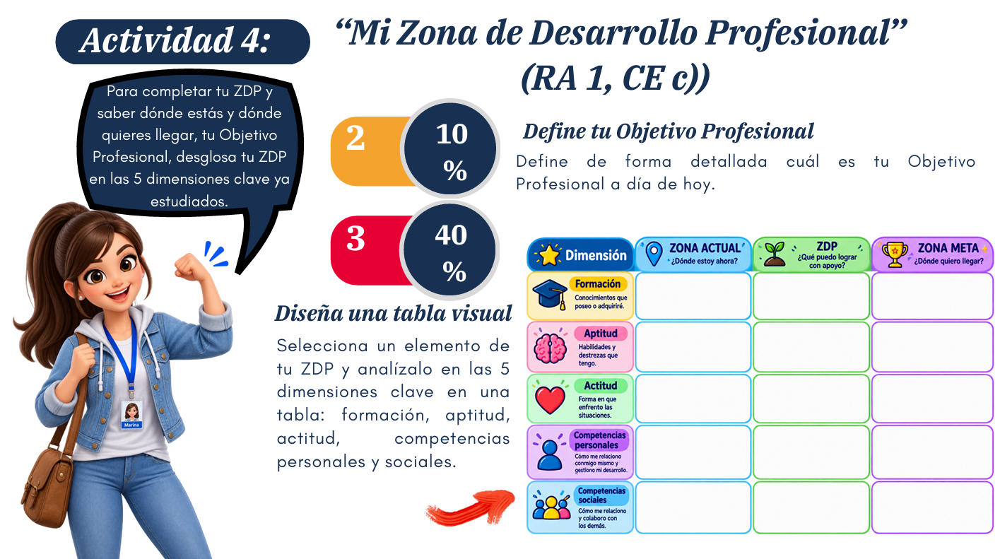
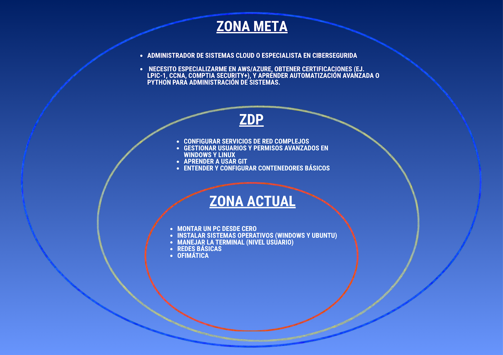
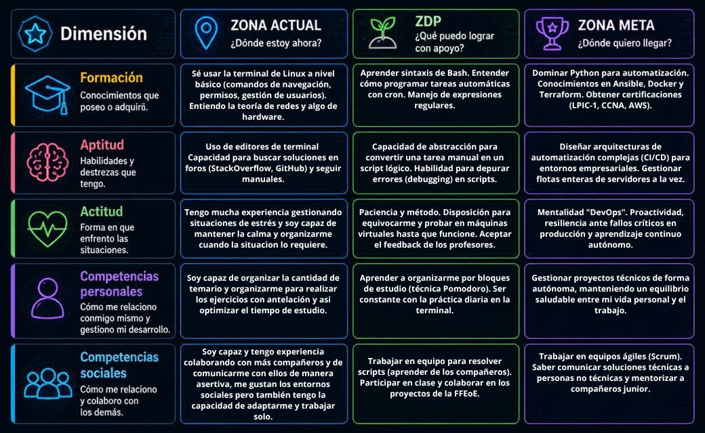

RA 1 · CE c) · IPE Unidad 01
Actividad 4 · Mi Zona de Desarrollo Profesional
Análisis de mi Zona de Desarrollo Próximo (ZDP) según la herramienta de los 3 círculos de Vygotsky.
← Volver a IPEMatriz de los 3 círculos

Mi objetivo profesional
Mi objetivo profesional se centra en especializarme en el ámbito de la Ciberseguridad, tomando como base fundamental la Administración de Redes. Ambas disciplinas están íntimamente conectadas: resulta imposible proteger una infraestructura crítica sin comprender primero cómo funcionan sus protocolos de red, sus servidores y sus sistemas operativos.
Actualmente mi meta a corto plazo es absorber todos los conocimientos técnicos del ciclo ASIR (Linux, Windows Server, redes, bases de datos y scripting). Sé que estoy en la fase de construcción de mis cimientos (mi Zona Actual), por lo que mi prioridad este trimestre es dominar la configuración de servicios de red y la automatización de tareas.
A medio plazo, mi objetivo es aplicar estos conocimientos durante la FFEOR en un departamento de IT, Soporte Técnico o NOC (Network Operations Center).
Plan de carrera
- Especialización: obtener certificaciones clave como CCNA (redes) y CompTIA Security+ o eIPT (ciberseguridad).
- Desarrollo técnico: auditorías de seguridad, análisis de vulnerabilidades, hardening de servidores y monitorización con Wireshark, Nmap o SIEMs.
- Entorno laboral: trabajar como Analista de Seguridad (SOC Analyst) o Administrador de Redes y Sistemas Seguros. A largo plazo, especializarme en seguridad ofensiva (Pentesting) o defensiva (Blue Team).
En resumen: convertirme en un profesional capaz de diseñar, administrar y blindar infraestructuras tecnológicas, adaptándome constantemente a las nuevas amenazas del sector.
ZDP en las 5 dimensiones clave

Detalle de la matriz

Análisis complementario

Documento
Documentación completa de la actividad en formato PDF: